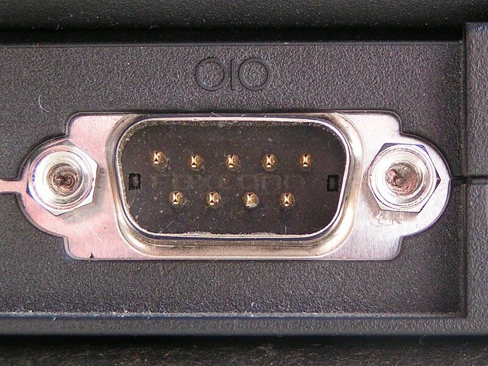

File:Serial port.jpg

Size of this preview: 800 × 600 pixels. Other resolutions: 320 × 240 pixels | 640 × 480 pixels | 1,024 × 768 pixels | 1,310 × 982 pixels.
{kind=link}
{kind=link}
{kind=link}
{kind=link}
Original file (1,310 × 982 pixels, file size: 279 KB, MIME type: image/jpeg)
| This is a file from the Wikimedia Commons. Information from its description page there is shown below. Commons is a freely licensed media file repository. You can help. |
{kind=link}
Summary
| Description | Serial Computer Port |
| Date | |
| Source | Own work |
| Author | Duncan Lithgow |
| Permission (Reusing this file) |
Permission is granted to use as per the license |
Licensing
| I, the copyright holder of this work, release this work into the public domain. This applies worldwide. In some countries this may not be legally possible; if so: I grant anyone the right to use this work for any purpose, without any conditions, unless such conditions are required by law. |
File history
Click on a date/time to view the file as it appeared at that time.
| Date/Time | Thumbnail | Dimensions | User | Comment | |
|---|---|---|---|---|---|
| current | 14:04, 24 May 2006 |  | 1,310 × 982 (279 KB) | DuLithgow | {{Information| |Description=Serial Computer Port |Source=Own work |Date=2006-05-24 |Author=Duncan Lithgow |Permission=Permission is granted to use as per the license |other_versions= }} |
File usage
The following 3 pages use this file:
Global file usage
The following other wikis use this file:
- Usage on af.wikipedia.org
- Usage on ar.wikipedia.org
- Usage on bg.wikipedia.org
- Usage on ca.wikipedia.org
- Usage on de.wikipedia.org
- Usage on de.wikibooks.org
- Usage on en.wikibooks.org
- Usage on en.wikiversity.org
- Usage on es.wikipedia.org
- Usage on et.wikipedia.org
- Usage on fa.wikipedia.org
- Usage on fi.wikipedia.org
- Usage on fi.wikibooks.org
- Usage on fr.wikipedia.org
- Usage on he.wikipedia.org
- Usage on hu.wikipedia.org
- Usage on hy.wikipedia.org
- Usage on ja.wikipedia.org
- Usage on kk.wikipedia.org
- Usage on ko.wikipedia.org
- Usage on lt.wikipedia.org
- Usage on lv.wikipedia.org
- Usage on ml.wikipedia.org
- Usage on nl.wikipedia.org
- Usage on pl.wikipedia.org
- Usage on pt.wikipedia.org
- Usage on ro.wikipedia.org
- Usage on simple.wikipedia.org
- Usage on si.wikipedia.org
- Usage on sl.wikipedia.org
- Usage on sr.wikipedia.org
- Usage on sv.wikipedia.org
- Usage on ta.wikipedia.org
- Usage on ur.wikipedia.org
- Usage on vi.wikipedia.org
- Usage on www.wikidata.org
- Usage on zh-yue.wikipedia.org
- Usage on zh.wikipedia.org